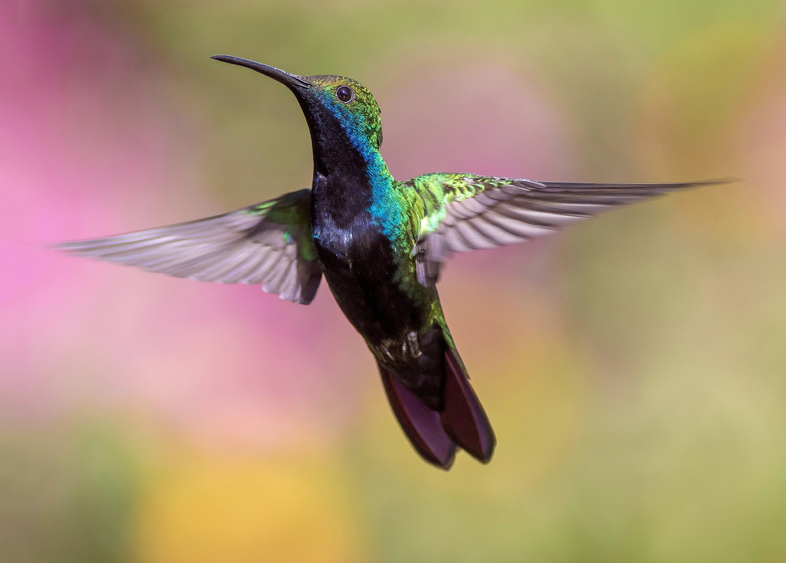
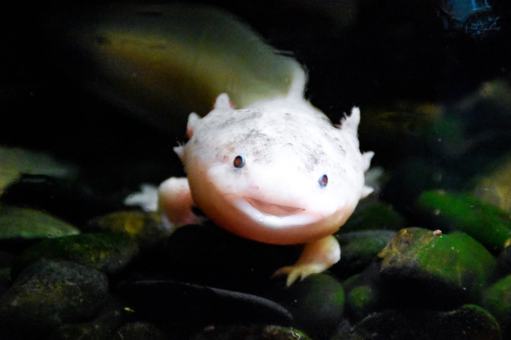
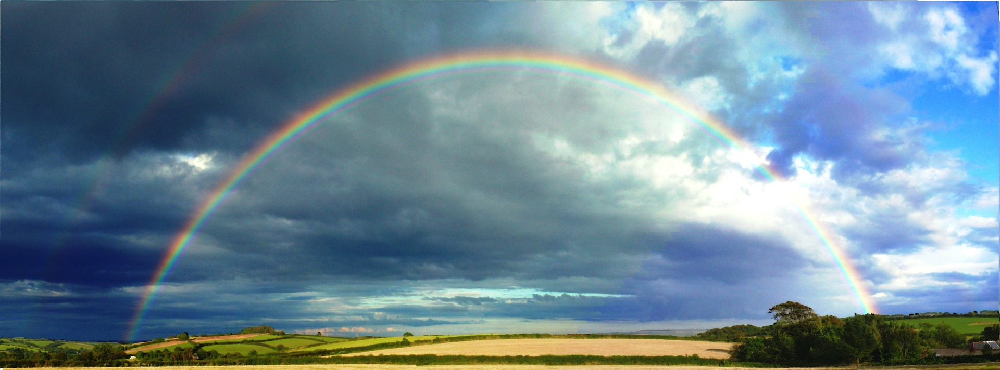

A Haiku is a poem with Japanese origins that consists of only three lines and 17 syllables total. The first line is five syllables long, the second seven, and the third one five again. Below you will see many examples of different kind of Haikus. Hope you enjoy!
This is a haiku
It serves as an example
I hope it helps you
There's a graceful bird
soaring through the summer air
having a good time

An axolotl
is rarely talked about now
It deserves better

A man named Preston
has eaten lots of sushi
He's a sushi fan
Looking at the clouds
I cannot help but dream of
being there with them
Every now and then
a raging thunderstorm comes
and leaves a rainbow
